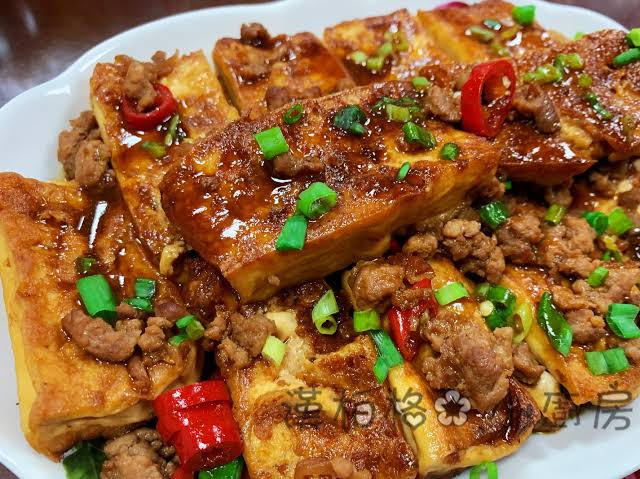

• 主材料：板豆腐（或雞蛋豆腐）1盒（約300至400克），板豆腐較不易碎，雞蛋豆腐口感更滑嫩。
• 辛香料：青蔥 2根（蔥白與蔥綠分開切段）、蒜頭 3瓣（拍碎或切片）、薑 3片（切絲或切片）。
• 調味料：醬油 2大匙、蠔油（或素蠔油）1大匙、糖 1小匙、米酒 1大匙、白胡椒粉少許、水（或高湯）約150毫升。
• 勾芡水：太白粉（或玉米粉）1小匙加2大匙水調勻（可依喜好省略）。
1. 處理豆腐：將豆腐切成約1.5公分厚的片狀或塊狀，用廚房紙巾輕輕吸乾表面水分，避免下鍋時油爆。
2. 煎至金黃：熱鍋加入適量油，油熱後轉中小火，將豆腐平鋪放入鍋中，不要急著翻動。煎約2至3分鐘至底部金黃定型後再翻面，兩面都煎金黃後先盛起備用（或直接推到鍋邊）。
3. 爆香辛料：利用鍋中餘油，放入蔥白、蒜末與薑片，以小火爆香出香氣。
4. 調味煨煮：加入醬油、蠔油、糖與米酒略炒出醬香，倒入水（或高湯）與白胡椒粉煮滾。隨後將煎好的豆腐放回鍋中，轉小火加蓋悶煮約3至5分鐘，讓豆腐吸飽湯汁。
5. 勾芡起鍋：開蓋後，沿著鍋邊淋入太白粉水輕輕推勻（用鍋鏟背輕推避免弄碎豆腐），待湯汁變得濃稠亮澤時，撒上蔥綠段並淋少許香油即可起鍋。